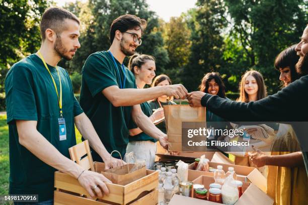
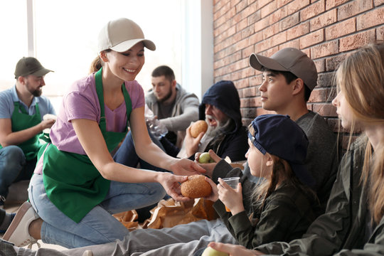

Poverty is the condition in which one does not have a socially acceptable amount of money or material possessions. It is considered to exist when people lack the adequate means to sustain their basic needs. Currently, around 3.5 billion people in the world are considered to be poor by a standard which is more relevant for upper middle income countries.
In the Philippines, as of 2023, the national population was 114.9 million. In that same year, 15.5% of its population lived under the poverty line, which corresponds to 17.5 million poor Filipinos.
The Philippine government has implemented anti-poverty programs, which, according to the DILG, was able to benefit 4.7 Filipinos. There are many such programs, including 4Ps and DOLE's TUPAD. The Asian Development Bank also had a Country Partnership Strategy with the Philippine government which emphasized human development, increasing economic competitiveness, and quality infrastructure.
There were also other things that were being done internationally in order to address poverty. The Millenium Declaration committed to reduce the number of people living in poverty by 2015. The UN also made a set of 17 goals, one which is about poverty itself.
The purpose of this website is to educate people about poverty and its effects. This is to encourage people to participate in poverty eradication, especially in the Philippines.
Here are some pictures related to our advocacy:
 If you want to see change in your country, do something about it. Because even a small action, like donating to charity, can make a difference.